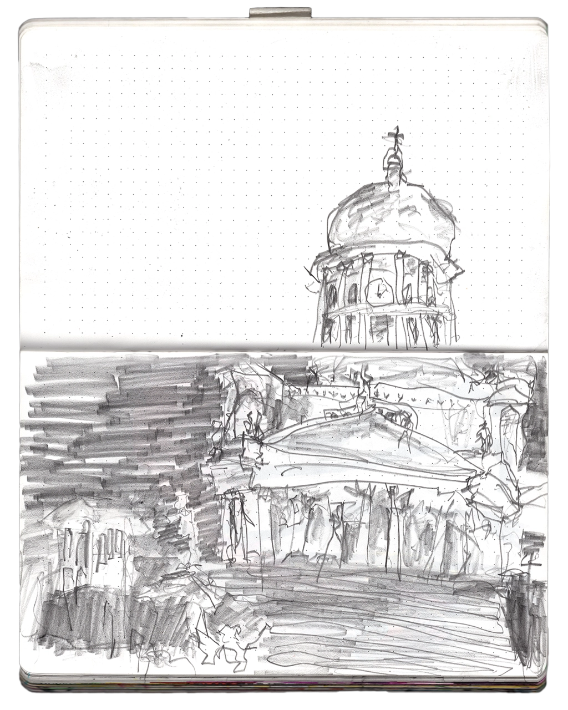

Drawings
Just kind of having fun / 2018 – present
Along with my various interests in all facets of the design "realm," I also enjoy drawing. From pens to pencils, from charcoal to digital styluses, I like them all. As a side hobby of mine, drawing isn't something I spend an exorbitant amount of time practicing, but it's definitely something I wish to get better at.

